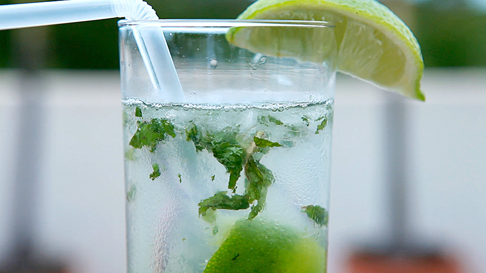

Cuban Mojito

Description
This is a traditional mojito recipe. The muddling and the order of the ingredients helps ensure that all the flavors are well blended. Serve with a straw and a decorative stir stick to keep the different flavors well mixed together. Mint sprigs may be used for a garnish instead of lime wedges. Enjoy! (Note:This recipe yields 2 servings)
Ingresients
- 2 teaspoons white sugar
- 1 lime, cut into 4 wedges
- 4 springs fresh mint
- 1/2 cup white rum
- 2 cups club soda
- 2 cups crushed ice
- 2 wedges lime, as garnish
Steps
- Place 1 teaspoon of sugar into each of two 12 ounce glasses. Squeeze the juice from a lime wedge into each glass, drop in the wedge, and add 2 sprigs of mint. Use a spoon or muddler to mash the sugar, lime juice, and mint together in the bottom of the glasses.
- Fill each glass about half full with crushed ice. Pour 1/4 cup rum into each glass. Fill the glasses with club soda, stir, and garnish with additional lime wedges